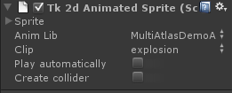

Documentation
Script Reference
Forum
Documentation
Script Reference
Forum

The Sprite foldout displays a default sprite inspector when expanded. This is identical to the Sprite inspector, only contained within a foldout.
AnimLib - Selects an animation library
Clip - Selects a clip from the selected animation library
Play automatically - Plays this clip automatically on start up.
Create collider - Ticking this will automatically create and animate a box collider. You should tick this if any of the animation clips you play for this sprite will need a collider. For example, if you start at a default idle animation which doesn't need colliders, and you could potentially play an attack animation which needs a collider, you should tick this here so no dynamic allocations will be performed.